Oil geopolitical risk: off the March peak, still high. Iacoviello's oil-related AI-GPR read 752 in September, below the March 2026 record of 1,844 but above the 2003 Iraq-war (515) and 2022 Ukraine (736) readings. Source: https://www.matteoiacoviello.com/ai_gpr.html
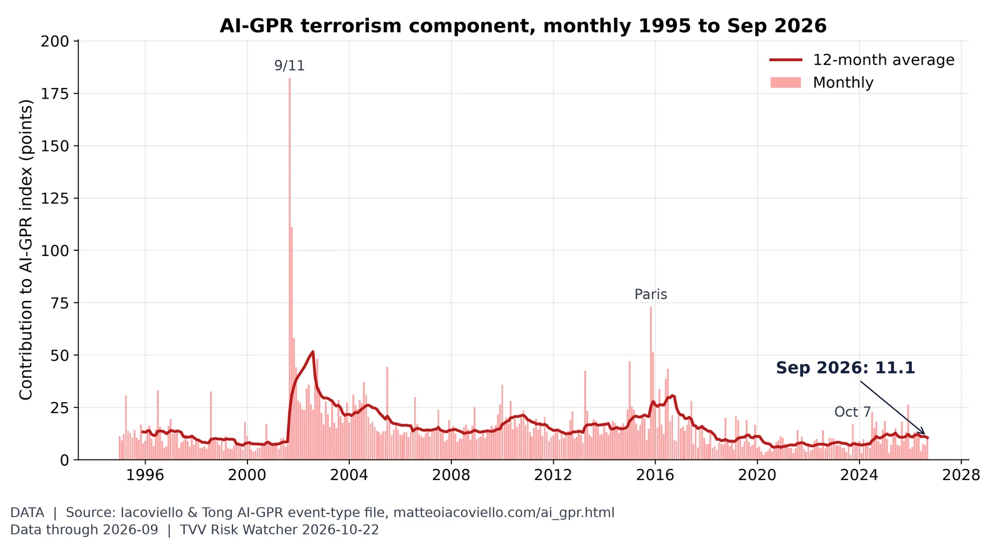
Terrorism share of geopolitical risk. The terrorism component of AI-GPR was 11.1 in September vs 7.0 in August; the 2026 monthly high is 13.3 (March) and the 12-month average is 10.5. Source: https://www.matteoiacoviello.com/ai_gpr.html
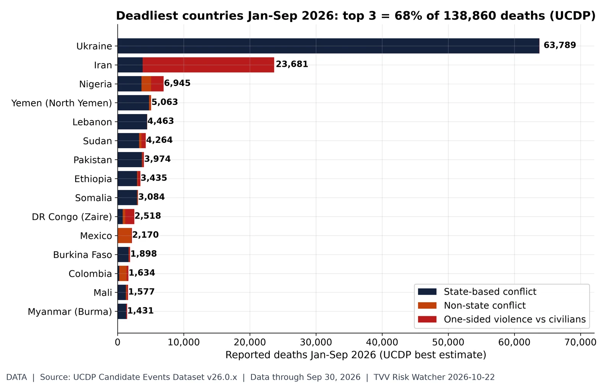
The deadliest conflict zones of 2026. UCDP candidate events Jan-Sep 2026: 138,860 deaths worldwide; Ukraine 63,789, Iran 23,681, Nigeria 6,945, Yemen (North Yemen) 5,063, Lebanon 4,463. Largest one-sided (civilian-targeted) toll: Iran 19,901. UCDP codes organized violence (state, non-state, one-sided), which includes but is not limited to terrorism; candidate data are preliminary and revised monthly. Source: https://ucdp.uu.se/downloads/
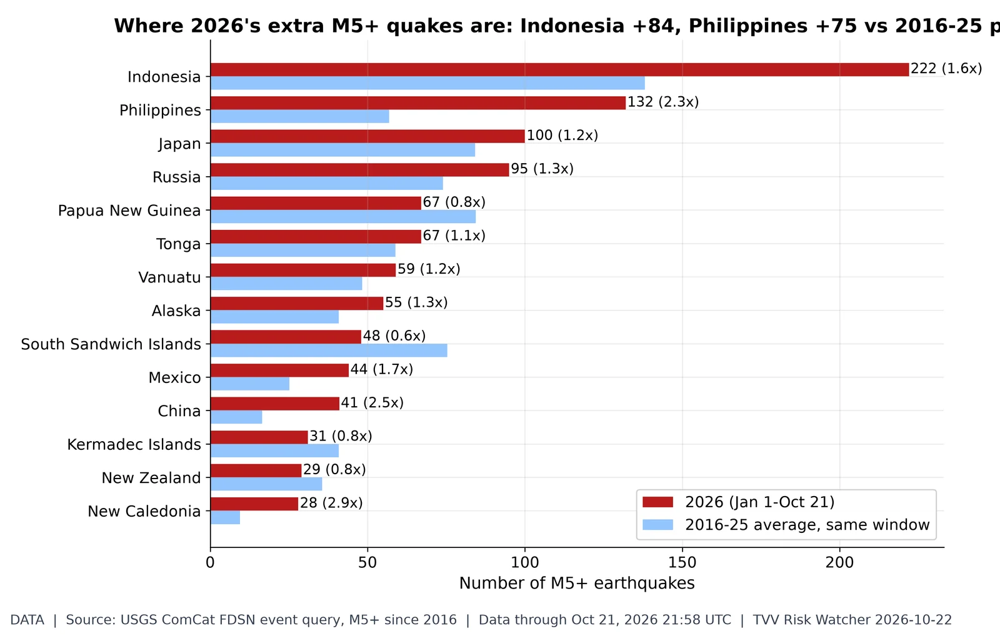
Which regions are shaking more?. USGS ComCat M5+ through 21:58 UTC Oct 21: 1,631 in 2026 vs a 2016-25 average of 1,394 for the same Jan 1-Oct 21 window. Busiest: Indonesia 222 (avg 138.1), Philippines 132 (avg 56.8), Japan 100 (avg 84.2), Russia 95 (avg 74.0). Biggest excess vs normal (regions averaging 5+): Panama 4.6x, New Caledonia 2.9x, China 2.5x. Regions are USGS place-name tails (country or named region), so offshore zones may split. Source: https://earthquake.usgs.gov/fdsnws/event/1/query?format=csv&starttime=2016-01-01&minmagnitude=5&orderby=time-asc&limit=20000&eventtype=earthquake
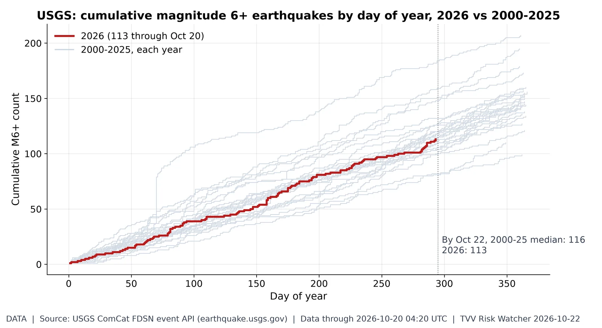
M6+ earthquake pace. 2026 has 113 M6+ quakes through Oct 20 vs a 2000-25 median of 116 by this date (range 81-184). Latest: M6.3 197 km NW of Port-Olry, Vanuatu (Oct 20, 04:20 UTC). 12 duplicate USGS solution(s) of the same event merged. Source: https://earthquake.usgs.gov/fdsnws/event/1/
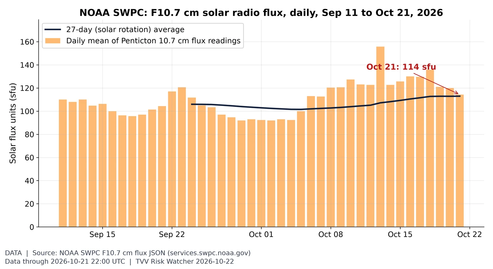
Solar activity proxy: F10.7 flux. The 10.7 cm solar radio flux, a standard proxy for solar activity and upper-atmosphere drag on satellites, was 114 sfu on Oct 21 (27-day average 113; window range 92-156). Source: https://www.swpc.noaa.gov/phenomena/f107-cm-radio-emissions
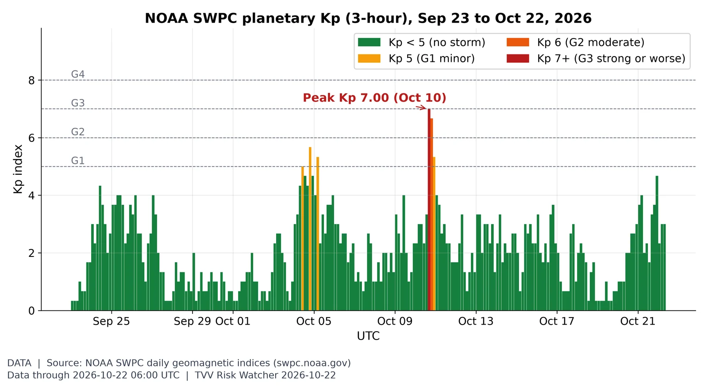
Geomagnetic activity, last 30 days. Kp peaked at 7.00 on Oct 10 in this 30-day window; Oct 21 maxed at Kp 4.67 (UTC day), and NOAA's latest 3-day forecast (issued 2026 Oct 22 0030 UTC) has a peak Kp 4.67 (NOAA Scale G1) on Oct 22. Source: https://www.swpc.noaa.gov/products/planetary-k-index
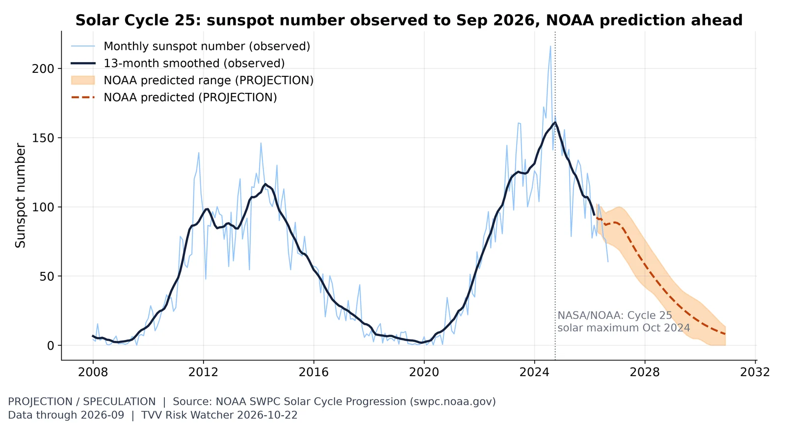
Solar Cycle 25 progression. The monthly sunspot number was 60 in September, past the Oct 2024 maximum; declining phases can still bring large flares and CME storms such as Oct 10's. Source: https://www.swpc.noaa.gov/products/solar-cycle-progression
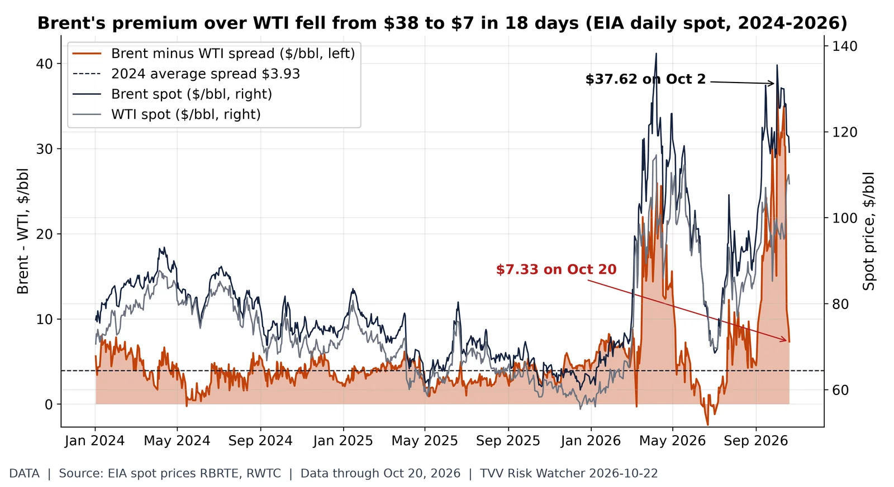
Brent-WTI premium: $38 to $7. EIA daily spot: Brent $115.22, WTI $107.89 on Oct 20, a $7.33 Brent premium, down from $37.62 on Oct 2 (2024 average $3.93). A wide Brent premium signals seaborne (Gulf-exposed) crude scarcity relative to landlocked US supply; the narrowing means that stress has eased on paper even as both prices stay high. Source: https://www.eia.gov/dnav/pet/hist/RBRTED.htm
Arizona's wet October. Flagstaff area (NOAA ACIS threaded record) logged 4.38 in. of precipitation Oct 1-21, 2026, about 4.4x the 1991-2020 average of 1.00 in. and the 2nd-wettest Oct 1-21 since 1950 (only 1972 was wetter, 8.46 in.). Biggest day: 1.98 in. on Oct 11. Context for the Oct 21 Clifton mud flood and Moenkopi Wash debris-flow warnings (both elsewhere in Arizona; this is one station, not a statewide total). Source: https://data.rcc-acis.org/StnData?sid=FLGthr&sdate=1950-01-01&edate=2026-10-22&elems=pcpn&output=json
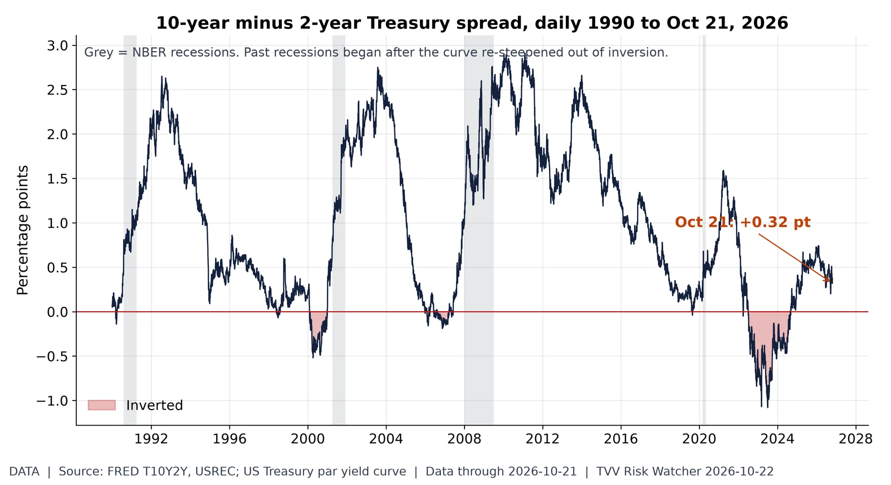
Yield curve after inversion. The 10Y-2Y spread is +0.32 pt on Oct 21 (Treasury: 10Y 5.13%, 2Y 4.81%), positive after the 2022-24 inversion; un-inversion preceded past recessions. Source: https://fred.stlouisfed.org/series/T10Y2Y
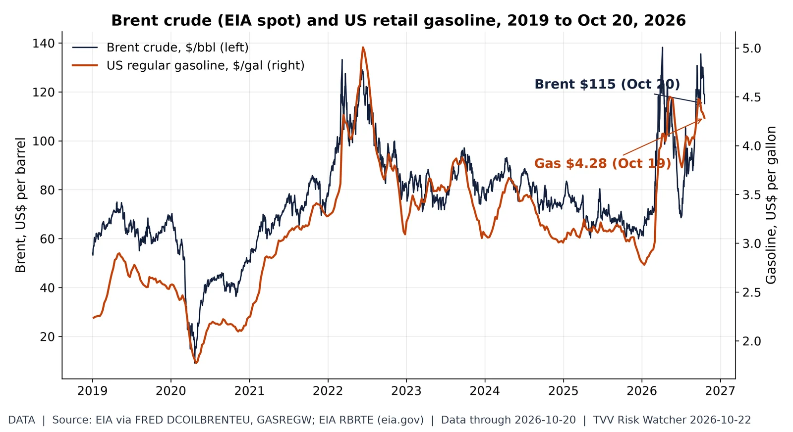
Oil shock at the pump. EIA Brent spot was $115.22 on Oct 20 (period peak $138 in April 2026); EIA's US regular gasoline average was $4.28 in the week of Oct 19. Both EIA series lag the market by about a week. Source: https://fred.stlouisfed.org/series/DCOILBRENTEU
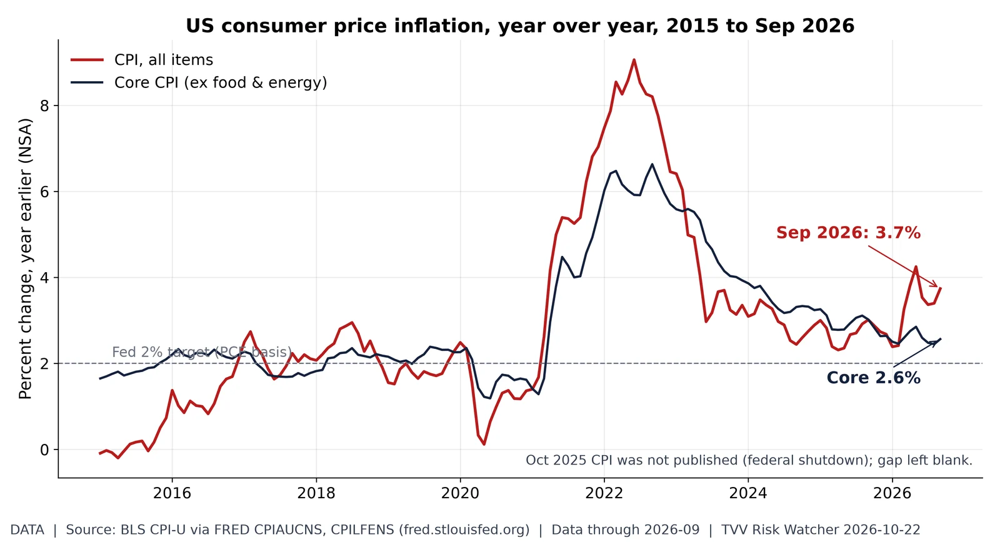
Energy-led inflation gap. Headline CPI was 3.7% year over year in September (from 3.4% in August) while core was 2.6%: energy is driving the gap. Source: https://fred.stlouisfed.org/series/CPIAUCNS
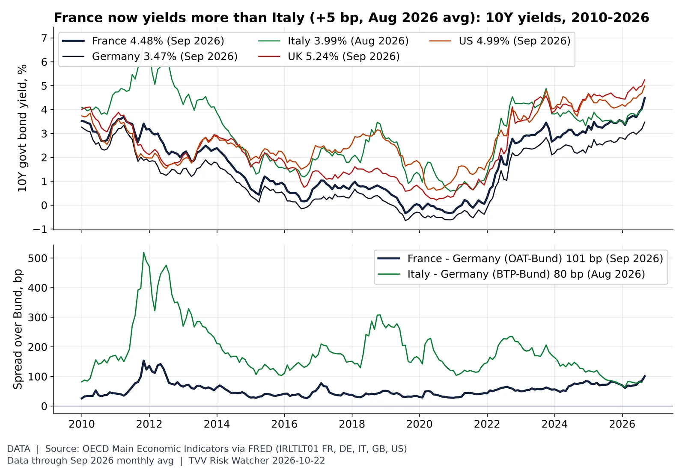
France bond risk, in context. OECD monthly 10Y yields: France 4.48% in Sep 2026, Germany 3.47%, UK 5.24%, US 4.99%, Italy 3.99% (Aug 2026). OAT-Bund 101 bp vs BTP-Bund 80 bp; France-Italy gap +5 bp (Aug 2026; it was -56 bp in Jan 2010). Monthly averages lag daily moves; daily OAT quotes are not charted (ECB/Banque de France daily series unreachable from the box). Source: https://fred.stlouisfed.org/series/IRLTLT01FRM156N
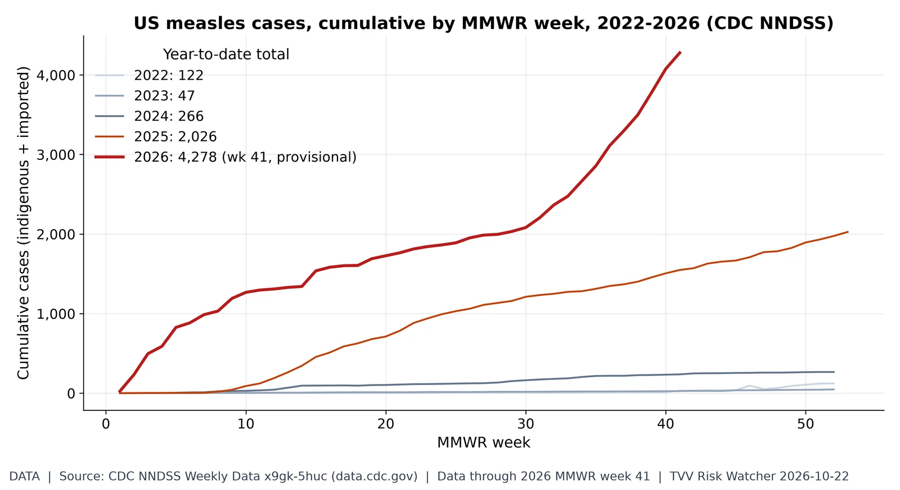
US measles resurgence. NNDSS shows 4,278 US measles cases through MMWR week 41 of 2026, 2.1x all of 2025 (2,026); latest provisional week posted as of 7 AM ET Oct 22. Source: https://data.cdc.gov/NNDSS/NNDSS-Weekly-Data/x9gk-5huc
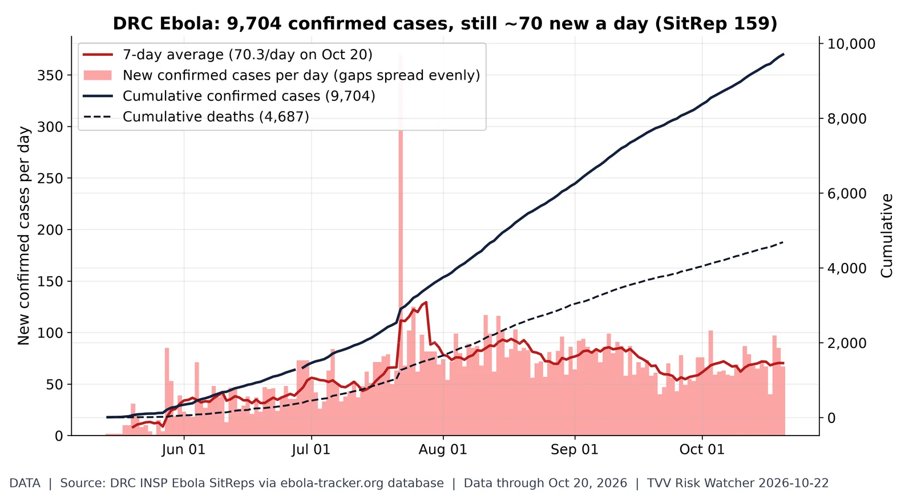
Ebola outbreak not slowing. INSP SitRep 159 (situation Oct 20): 9,704 confirmed cases and 4,687 deaths (48.3% of confirmed cases) since the first bulletin May 14; 7-day average 70.3 new cases/day (peak 129.4 around Jul 28). Top provinces: Ituri 7,040, Nord-Kivu 2,146, Haut-Uélé 421. Daily values where bulletins skip days are spread evenly; data are as transcribed by ebola-tracker.org from INSP PDFs. Source: https://ebola-tracker.org/en/database/
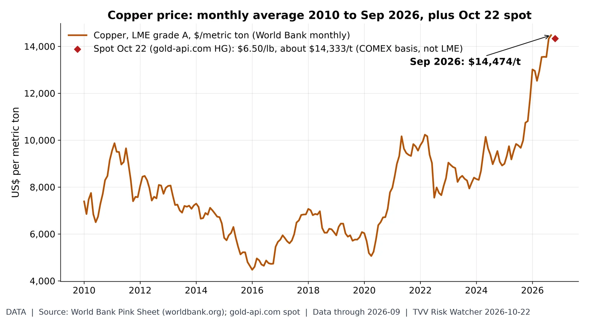
Copper near the top of its range. Copper averaged $14,474/t in September (a 2010-26 monthly record); the Oct 22 COMEX-basis spot quote is $6.50/lb (about $14,333/t). Source: https://www.worldbank.org/en/research/commodity-markets
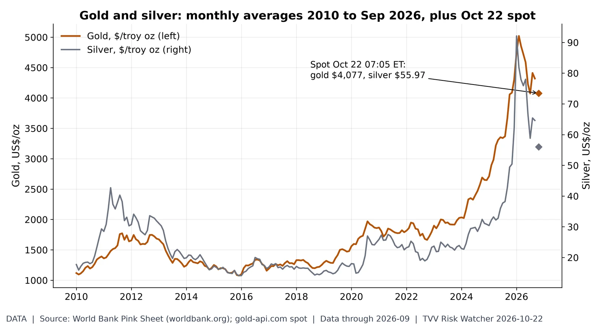
Haven metals. Gold averaged $4,319 in September (2010-26 monthly high $5,020, Feb 2026) and silver $64.60; gold-api.com spot at 07:05 ET Oct 22 is gold $4,077, silver $55.97. Source: https://www.worldbank.org/en/research/commodity-markets
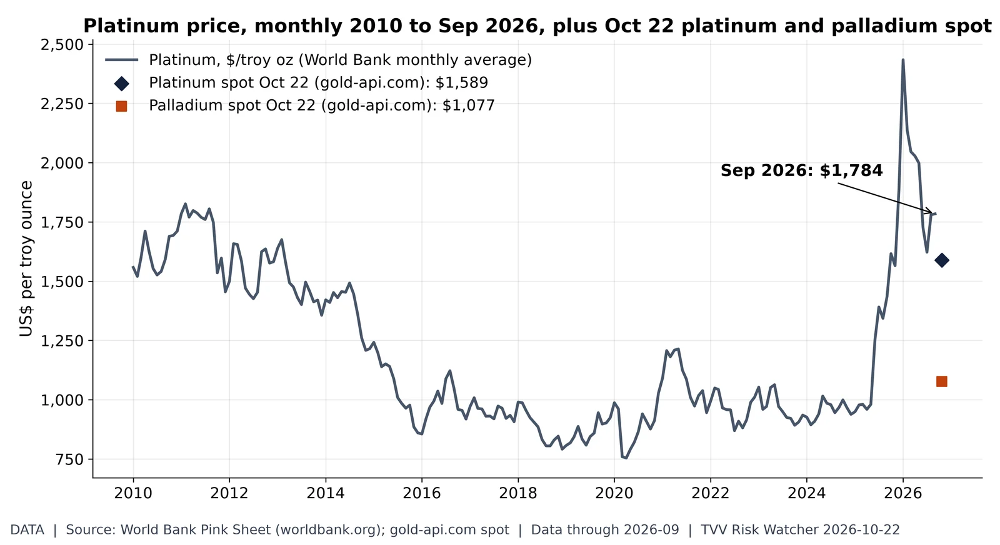
Platinum group metals. Platinum averaged $1,784/oz in September (2010-26 high $2,434, Jan 2026); Oct 22 spot quotes at 07:05 ET are platinum $1,589 and palladium $1,077. Source: https://www.worldbank.org/en/research/commodity-markets
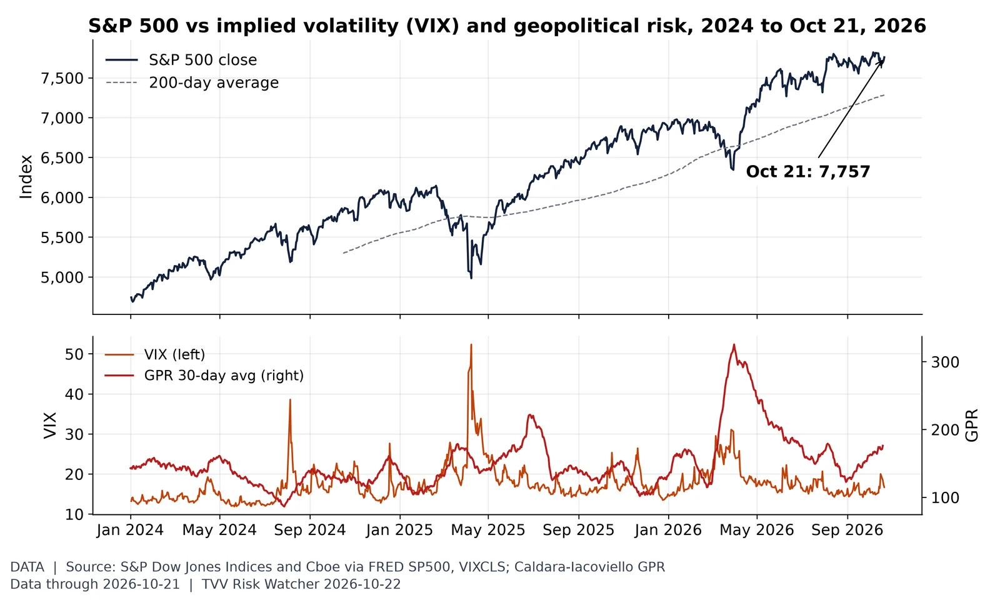
Stocks vs volatility and geopolitical risk. The S&P 500 rose 0.58% to 7,757.17 on Oct 21, +6.5% vs its 200-day average, with VIX at 16.68; the GPR 30-day average was 176 on Oct 19. Source: https://fred.stlouisfed.org/series/SP500
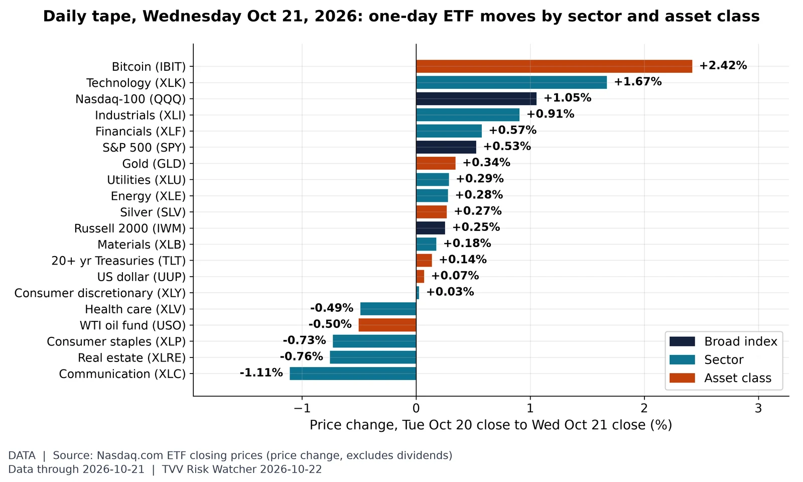
The last session by sector. On Wednesday Oct 21, the best performer was Bitcoin (IBIT, +2.42%) and the worst Communication (XLC, -1.11%), with SPY +0.53% and QQQ +1.05%. Source: https://www.nasdaq.com/market-activity/etf/spy/historical
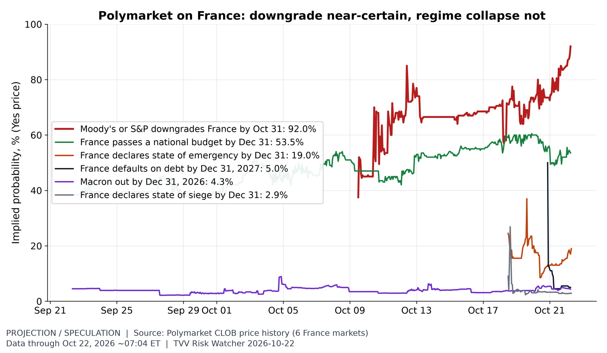
Betting on France's crisis. Polymarket hourly Yes prices at ~07:00 ET Oct 22: Moody's or S&P downgrades France by Oct 31 92.0% (from 37.5% on Oct 9); France passes a national budget by Dec 31 53.5% (from 38.5% on Sep 22); France declares state of emergency by Dec 31 19.0% (new market, opened Oct 18); France defaults on debt by Dec 31, 2027 5.0% (new market, opened Oct 20); Macron out by Dec 31, 2026 4.3% (from 4.5% on Sep 22); France declares state of siege by Dec 31 2.9% (new market, opened Oct 18). Thin markets (the default contract traded ~$260 in volume) can move on small bets; odds are crowd prices, not forecasts by rating agencies. Source: https://polymarket.com/event/moodys-or-sp-downgrades-france-byptptpt
Tesla: stock and merger odds. Nasdaq.com closes: TSLA $386.47 on Oct 21 (-15.9% since Oct 1 2025) vs QQQ +20.2%; the Oct 21 close predates the after-hours Q3 report. Polymarket merger-announcement odds by deadline (~07:00 ET Oct 22): Dec 31, 2026 16.0%, Jan 31, 2027 30.0%, Feb 28, 2027 35.5%, Jun 30, 2027 55.5%, Dec 31, 2027 67.5%. Source: https://www.nasdaq.com/market-activity/stocks/tsla/historical